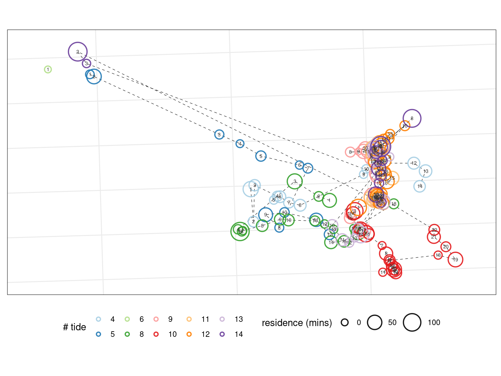

vignettes/watlas_vignette_02_iteration.Rmd
watlas_vignette_02_iteration.Rmdwatlastools was built to handle large tracking datasets from the WATLAS system. These datasets are – currently – split into subsets and saved locally, typically in a folder called revisitData, revisit_data or similar 1. In general, watlastools packages would work on the whole dataset as well, but this functionality has not been tested.
Here, we cover iterating watlastools functions over multiple data files, and introduce the wat_repair_ht_patches function.
library(watlastools)
if(!"ggspatial" %in% installed.packages()){
install.packages("ggspatial")
}
# read data and see leading lines
library(data.table)
library(purrr)
library(dplyr) # pipe operator %>%Begin by reading in the data files from 10 tidal cycles for one individual.
# list the data files available and read them in
data_files <- list.files("vignette_data/", pattern = "413",
full.names = TRUE)
data <- map(data_files, fread)Apply watlastools patch functions on each tidal cycle. watlastools functions are tidyverse compatible, and can be chained using the %>% operator. Here, we wil use the function defaults, but they can be passed as arguments.
# map over the list of data.tables
patch_data <- map(data, function(df){
to_return <- df %>%
wat_infer_residence() %>%
wat_classify_points() %>%
wat_make_res_patch()
return(to_return)
})The data returned is a list; each element of dataframes (really of the class data.table). The dataframes in the list contain a list-column of dataframes (a dataframe inside another dataframe); these nested dataframes hold the point data that was used to construct each patch.
High tide presents an issue for watlastools, since it was originally written with low tide data in mind. The issue is that residence patches at the beginning of a tidal cycle (high tide) are essentially continuations of residence patches at the end of the previous tidal cycle.
The wat_repair_ht_patches function was written to fix this issue. It is a reworking of the original wat_make_res_patch function, except that it operates on a list of residence patches, as we made above, and looks only at the first and last patches of each tidal cycle.
If the first patch (Pa) of tidal cycle (called tidenumber in the data) is not spatio-temporally distinct from the last patch of the previous tidal cycle (Pb), Pa is merged into Pb.
## [1] 157# repair patches for id 413
repaired_data <- wat_repair_ht_patches(patch_data_list = patch_data)
# count the number of repaired patches
nrow(repaired_data)## [1] 153From an initial unrepaired number of 157, we now have 153 patches.
Here, we will visualise the repaired data as in the previous vignette.
# plotting libraries
library(ggplot2)
library(ggspatial)
fig_patch_repair <- ggplot(repaired_data, aes(x_mean, y_mean))+
geom_path(aes(group = tide_number),
col = "black", lwd = 0.2, lty = 2)+
geom_point(aes(size = duration/60,
col = factor(tide_number)),
stroke = 1,
shape = 21, fill = NA,
alpha = 0.9)+
geom_text(aes(label = patch),
col = "grey20", size = 2)+
scale_size(range = c(3,10))+
scale_colour_brewer(palette = "Paired", direction = 1)+
scale_x_continuous(expand = expansion(mult = c(0.1)))+
scale_y_continuous(expand = expansion(mult = c(0.1)))+
coord_sf(crs = 32631)+
annotation_scale(location = "br", width_hint = 0.1, text_cex = 1)+
theme_bw()+
theme(legend.position = "bottom",
axis.text = element_blank(),
axis.ticks = element_blank())+
labs(x = NULL, y = NULL,
col = "# tide", size = "residence (mins)")
The steps invovled are shown in sections 4 and 5 of the knotPatches bookdown. These steps are not covered here because they make use of too many other packages.↩